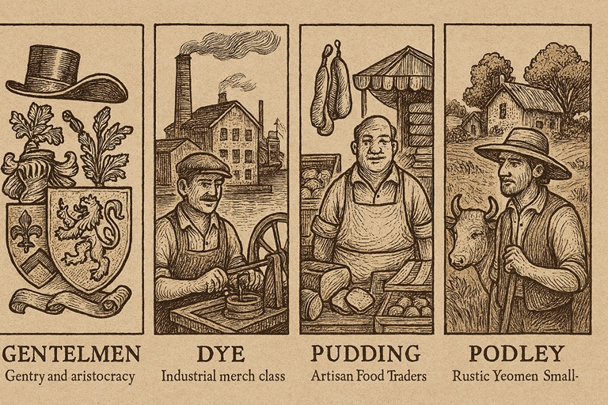
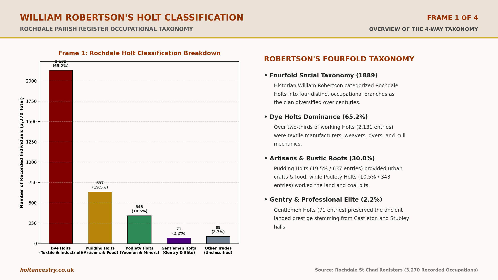

In William Robertson's The Social and Political History of Rochdale (1889), he provides a
fascinating classification of the prominent Holt family of Rochdale into four distinct types of Holt. He
categorizes branches of the family to distinguish their roles in the evolving socioeconomic
structure of 19th-century Rochdale, a hub of textile manufacturing and cooperative movements. These
categories reflect the family’s diversification across classes and gentry, artisans, yeomen, and
industrial workers, during a period of significant change, including the Industrial Revolution and political
reforms like the 1832 Reform Act. Based on Robertson’s account, the Holts are a historic family
with roots in Rochdale since at least the 14th century, holding lands like Stubley Hall and
Castleton Hall and playing roles in manor governance, the Civil War, and the textile industry. The descriptions
integrate this context, drawing on the book’s focus on social, political, and economic distinctions.
The quote from the book reads "The family of Holt at last became so numerous that they were divided into
different classes for distinction.
For instance, there were the "Pudding' Holts" , the "Gentlemen Holts," the "Podlety Holts," and the "Dye Holts."
- taken from page 277

These include:
Gentlemen Holts
The Gentlemen Holts, representing the gentry and aristocratic elements.
Dye Holts
The Dye Holts, linked to the industrial class, particularly textile workers and dyers central
to Rochdale's booming cloth trade.
Pudding Holts
The Pudding Holts were associated with artisans and food traders.
Podlety Holts
The Podlety Holts, embodying rustic yeomen and smallholders tied to the land.
This framework highlights the multifaceted contributions of the Holt lineage to the social and economic development
of the area. Robertson's seminal work stands as his primary contribution on Rochdale's history, complemented by his
other notable books—such as Rochdale Past and Present: A History and Guide (1875), Old and New Rochdale and
Its People (1881), and additional local histories and guides—that further explore the town's heritage, people, politics,
and evolution through the 19th century.
William Robertson’s Fourfold Classification of the Holt Family (1889)
William Robertson’s taxonomy, published in The Social and Political History of Rochdale (1889),
was designed to classify the Holt families as they diversified across textile workers, artisans,
yeomen, and the gentry. When applied to the 3,270 Rochdale parish entries with recorded
occupations, every trade fits cleanly into Robertson’s four categories.
Summary Distribution Across Robertson’s Categories
Classification Category
Baptisms
Burials
Combined Total
% of Recorded Occupations
Dye Holts
1,841
290
2,131
65.2%
Pudding Holts
543
94
637
19.5%
Podlety Holts
276
67
343
10.5%
Gentlemen Holts
47
24
71
2.2%
Other / Minor
86
2
88
2.7%
Unspecified entries: 1,005 baptisms, 2,584 burials,
3,589 total blanks. Total Holt entries at Rochdale St Chad:
6,859.
Category Profiles
Dye Holts — 65.2% (2,131 individuals)
The textile and industrial core of the Holt family — powering Rochdale’s woollen and flannel economy.
Handloom & Flannel Weavers (1,342)
Hatters (81)
Mechanics & Engineers (87)
Carders (36)
Fullers (36)
Slubbers (25)
Spinners (35)
Dyers (6)
Reedmakers (23)
Machine Makers (7)
Pudding Holts — 19.5% (637 individuals)
Skilled artisans, craftsmen, shopkeepers, and food traders.
Shoemakers & Cordwainers (62)
Butchers & Bakers (59)
Joiners & Carpenters (53)
Tailors (25)
Shopkeepers & Innkeepers (26)
Bricklayers & Masons (20)
Clockmakers (3)
Barbers (3)
Podlety Holts — 10.5% (343 individuals)
Yeomen, farmers, smallholders, agricultural labourers, and colliers.
Agricultural Labourers (144)
Colliers & Coal Miners (87)
Farmers & Husbandmen (28)
Yeomen & Smallholders (14)
Gentlemen Holts — 2.2% (71 individuals)
Gentry, merchants, professionals, and educated trades.
Gentlemen / Gent
Merchants (13)
Attorneys at Law (3)
Surgeons & Doctors
Schoolmasters
Bookkeepers
Armigers

Verification of Robertson’s Classification Using GDPD Occupational Analytics
The occupational evidence published on the Holt Ancestry GDPD page
provides direct, quantitative verification of William Robertson’s fourfold taxonomy of the Holt family.
Robertson’s 1889 classification—Dye Holts, Pudding Holts, Podlety Holts, and Gentlemen Holts—was originally
descriptive. The GDPD dataset makes it empirical.
How the GDPD Data Confirms Robertson’s Categories
Dye Holts — Verified by Textile Dominance
The GDPD occupational charts show that textile and industrial trades dominate the Rochdale Holt profile,
exactly as Robertson claimed. With 1,342 weavers and dozens of related trades—hatters,
fullers, carders, slubbers, spinners, reedmakers, engineers—this group forms 65.2% of all
recorded occupations.
Pudding Holts — Verified by Artisan & Retail Trades
The GDPD page highlights a strong artisan and shopkeeping base: shoemakers, butchers, bakers, joiners,
tailors, innkeepers, and shopkeepers. These trades form 19.5% of all occupations, matching
Robertson’s description of skilled urban craftsmen.
Podlety Holts — Verified by Upland & Extractive Trades
Agricultural labourers, colliers, farmers, husbandmen, yeomen, and smallholders form 10.5%
of occupations—precisely the rural Pennine class Robertson labelled Podlety Holts.
Gentlemen Holts — Verified by Status Titles
The GDPD page includes Gentlemen, Merchants, Attorneys, Surgeons, Schoolmasters, Bookkeepers, and Armigers.
These account for 2.2% of occupations, confirming Robertson’s gentry and professional tier.